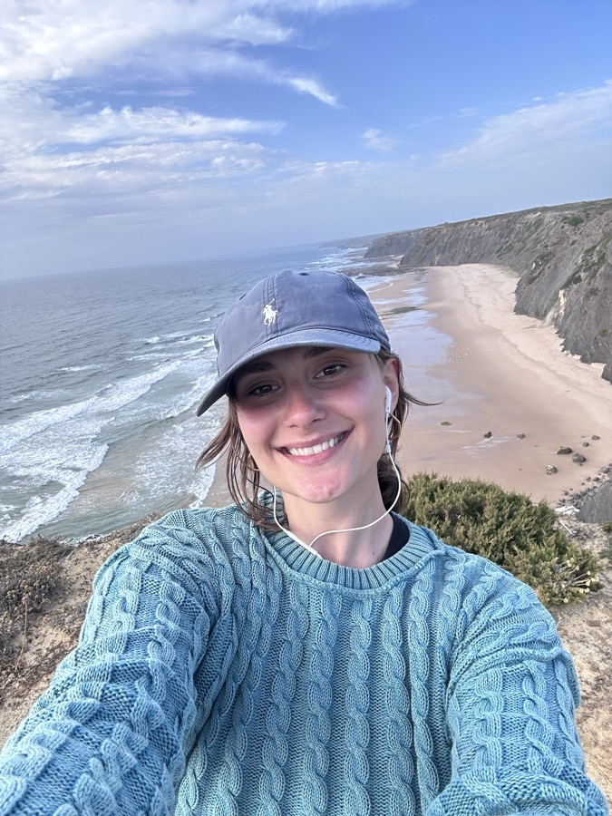

Right now I want one thing: big impact, from a small team.

October 2026
Why Cala?
I'll be honest: the first time I heard about Cala, I didn't get it.
So I explained it to myself the simple way. Picture a well-organised library for AI. Instead of searching all over the place, an agent asks Cala and gets the right fact, right away.
It properly clicked for me with the GTM example with Clay.
I came to your afterwork drinks a while back and left genuinely impressed. I started writing down how I'd take Cala to market, and never sent it.
Now the Marketing & Comms role is open, so I rebuilt it around what the role asks for: who chooses Cala, what each of them needs to hear, and how marketing builds the proof that gets them to yes.
Why me & Cala?
I've built growth marketing teams from zero to one, written ABM and campaign playbooks that scale, worked in sales, and side by side with sales, product and data, and helped influence $400M in pipeline.
I like uncertainty. I find my way through it by setting my own north star, and I set it the same way every time: with questions.
Here are the ones I'd answer in my first 30, 60, 90 and 180 days.
The 3 questions I'd build my strategy on in the first 6 months.
I'd organise the work as a pipeline built on three questions, one for each stage of the funnel. Each priority feeds a stage, each stage has its own metrics, and all of it flows into pipeline. All three start on day one; the time frame shows when each stage's numbers start to mean something. Click any node to see what it involves.
Swipe to follow the pipeline →
Part 1 — Who chooses Cala
Who would I target?
Cala's customers are companies: banks, asset managers, fintechs and the teams building AI products inside them. In those companies, nobody buys Cala on their own. Three people get involved, each with a different question, and a deal moves only when all three get an answer.
Champion
Technical teams
"Does this work in my stack, and is it better than what I'd build myself?"
AI/ML engineers, data engineers, platform teams building agents
Connected over MCP or the API in minutes
Typed results
Coverage of the sources they need
Accuracy and token use vs. web search
What I'd createQuickstarts, a benchmark with its methodology, technical articles, the free playground
Gatekeeper
Data leaders
"Can I trust this data, govern it and defend it to risk and audit?"
CDOs, heads of data, data governance and architecture
Source and lineage on every fact
Validity over time
Coverage by market
Fits with the Bloomberg or LSEG licences they already pay for
What I'd createA provenance white paper, a data-coverage one-pager, a security and SLA pack
Budget owner
Decision-makers
"What does this change for my team, and how quickly?"
Innovation leads, heads of KYC, compliance and research
Time to get an AI use case into production
Analyst hours saved per review
Output that holds up in an audit
What I'd createA business case per use case, customer stories, an ROI one-pager, executive roundtables
In practice the engineer usually tests first, often on the free tier. The data leader decides whether it's allowed in. The business owner decides whether it gets funded. Marketing has to serve all three, and give the champion what they need to sell Cala internally to the other two.
The free tier is also an enterprise signal. When an engineer from a target bank signs up, sales should know that day.
One message, three ways to say it.
The core idea stays the same for every audience. What changes is which proof comes first.
Your agent is only as good as what it knows. Cala makes sure it knows what's true, and where it came from.
Audience
Lead with
How it sounds
Engineers & data teams
Less work, better output
Skip the data pipeline. One endpoint, typed results, every fact sourced. Your agent spends its context on reasoning, not on cleaning up web pages.
CDOs & heads of data
Governance and lineage
Every fact carries its source and the period it's valid for. Data your agents can use and your auditors can trace, alongside the sources you already license.
Innovation & business leads
Speed to a defensible outcome
Put AI into KYC, due diligence and risk without putting your name behind a hallucination. From pilot to production on verified data.
These are starting points, not finished copy. I'd test them in sales conversations and ABM before locking anything, and rewrite them in the customers' own words.
Where to focus: finance first, pharma next.
Finance already has the coverage, the demos and the customers. Within finance, I'd lead with the workflows where "here's the source" is a regulatory requirement rather than a nice-to-have.
Use case
Who owns the problem
Why it lands
KYC, AML & sanctions
Heads of financial crime and compliance operations
The audit trail is mandatory, manual reviews are expensive, and ownership chains are hard to trace by hand.
Adverse media screening
Compliance and onboarding leads
When every hit comes with its source, analysts can clear it faster and defend the decision.
Commercial due diligence & entity watch
Corporate banking, credit risk
A full picture of a counterparty before the deal, and alerts when something changes afterwards.
Fund benchmarking & research
Asset-manager research and innovation teams
Reports that took analysts days, built from verified sources an agent can query.
Pharma
Pharma is the second vertical in the brief. Before making noise there, I'd agree with product what coverage exists (regulatory filings, trial registries, company and ownership data) and find one design partner. Marketing should follow the data coverage, not run ahead of it.
Geography
Barcelona gives Cala a home-market advantage in Spain, where BORME and CNMV data is already covered. Combined with the UK and US sources, that makes Spain, the UK and the US the natural first account lists, aligned with where sales already sells.
About
I'm Romanian, grew up between Bucharest and Amsterdam, and have been based in Barcelona for the last few years. I lead B2B marketing for enterprise buyers, inside a company that went through two M&A events in three years. Each time, I rebuilt the go-to-market motion from scratch inside a new organisation with new rules. It's the best training I know for early-stage work: you learn fast that the plan is always wrong and execution is everything.
I've built global campaigns that run on a single narrative and turn into horizontal and vertical kits, for both EMEA and the US. I manage over €460K in annual budget across those markets. My work has influenced over $400M in pipeline, returned 90x revenue for every dollar spent, and included a single nurture sequence that contributed to a $26M RFP.
What I understand that most marketers don't: marketing is only as good as how closely it includes your sales team.
I use AI agents every day. I built this page, my landing pages and my own custom Claude skills with Claude Code, so I know first-hand what an agent does with clean data and what it does with messy data.
Outside of work, I ran a food magazine in Barcelona and events teaching people to become more resilient with their food. Think meal prepping with your friends. Completely unrelated, but I wanted to share.
Next Step
This is an outside view. The people closest to the product and the customers will know things I don't, and I'd expect to change half of it after the first ten sales calls.
If it resonates, I'd love to talk about the Marketing & Comms role. Either way, what you're building is great. Keep going!